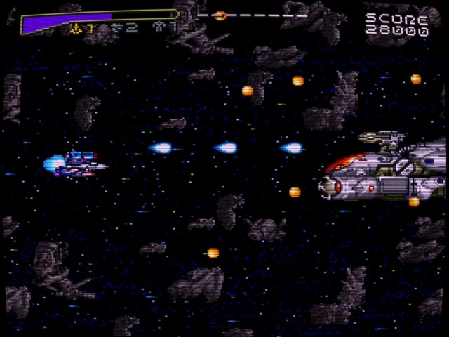

Everyone loves lists, easy to digest opinions that foster discussion, so I thought I’d start off by covering five awesome SNES/Megadrive era shmups I never got to play due to being in the UK.
I’m a huge fan of the shoot’em up genre, despite not being great at them and the fourth generation of consoles received some gems. Many of which never came to Europe (or North America) and as such I never got to play them growing up.
This list, certainly not a comprehensive one as many titles never made it to UK shores, consists of five games that I’d have loved to have had the chance to play twenty-five or so years ago when they were originally released.
5. Gradius III (SNES)
Konami 1990 (JP)/1991 (NA)
The Super Nintendo port of Konami’s classic Gradius III suffers from major slowdown, a common quirk with a lot of early SNES titles, and was sufficiently different to the arcade version having some levels omitted and others shuffled or remixed. Graphically it looks the part comparing favourably to its arcade cousin. This was one of the higher-profile SNES releases to never hit European shores and it wasn’t until the PlayStation 2 re-release alongside Gradius IV in 2000 that we got a version of this to enjoy.
4. Eliminate Down (Mega Drive/Genesis)
Aprinet 1993 (JP)
This interesting title features a weapons system similar to the popular Hellfire, with you able to change between three directionally distinct weapons: Forward Shot, Rear Laser and Diagonal Bombs. You can power-up your weapons by collecting five pickups per rank and interestingly this upgrades all three weapon types. The game has a high difficulty curve due to lacking checkpoints, forcing a level restart but controls well and feels nice to play. Thematically it’s quite generic but it does have some really nice art direction.
3. M.U.S.H.A. (Mega Drive/Genesis)
Compile 1990 (JP/NA)
Compile’s loose Aleste series is perhaps better known from their Super Nintendo outing, Super Aleste (Space Megaforce in the US) despite the series originating way back in 1988 on the MSX2 computer. This Megadrive entry is regarded as one of the best shmups of the whole 16-bit era and it’s not hard to see why. Featuring a unique visual aesthetic with a blend of futuristic and traditional Japanese architecture, it certainly stands out visually whilst retaining a similar powerup system from earlier Aleste titles.
2. Macross: Scrambled Valkyrie (SNES)
Winkysoft 1993 (JP)

This is a hidden gem if ever there was one, absolutely gorgeous visuals and an interesting transformation gimmick as you’d expect from a Macross title. Your Valkyrie fighter can change between Fighter, GERWALK and Battroid forms which change both the size of your hitbox as well as your weapon. Each of the forms can be powered up seperately.
1. Spriggan Mark 2 (PC Engine CD)
Compile 1992 (JP)
The PC Engine never officially came out in Europe, so we never got to witness the many great shoot ‘em ups on the system, especially those that came out for its CD-based variants. This mech-based shmup is a fast-paced affair with basic loadout customisation and fully voiced anime intermission sequences. AI mechs often assist alongside big hulking battleships which makes an interesting change of pace, in many ways it has a similar feel to Assault Suits Valken/Cybernator but with a much faster pace. It looks and sounds phenomenal and controls well.
So there we go, five traditional shmups that never saw European releases. Feel free to leave your thoughts on unusual or uncommonly talked about shmups in the comments below!